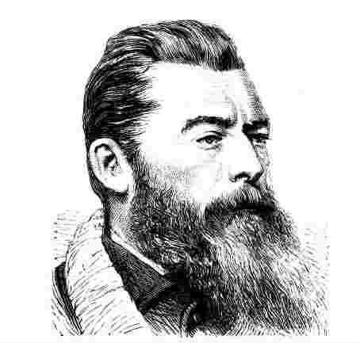
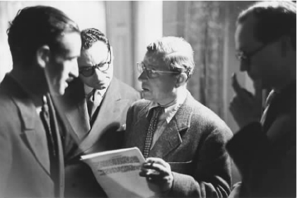

克尔凯郭尔描述生活和经验的不同模式，这为后来的两部主要作品打下了基础，正是这两部作品确立了他作为宗教思想家的声誉：一本是简洁而相对浓缩的《哲学片断》；另一本是大部头、重复性内容很多的《最后的非科学附言》，书中充满了论战。这两本书和前面的著作一样，以笔名发表，所使用笔名为约翰内斯·克莱马克斯（攀登者约翰）。不过与之前不同的是，克尔凯郭尔的名字也改头换面地出现在这里，署为两部作品的“编辑”。无论这一改变有什么确切的意义，至少我们有理由认为，在这种情况下，他希望读者明白这些观点是他自己的：他意在尽可能明确而有力地表明，“思辨哲学和基督教之间的误解”的真正意义是什么，而他相信，在自己那个时代的知识视野里，这种误解普遍存在。他的审美著作表明——尽管是间接地、暗示地——不同的心理因素和社会因素如何加深了这种误解。不过，核心任务仍然是描述其基本特性，引出其基本前提条件。这就是他现在赋予自己的任务，为此，他选择黑格尔以及受到黑格尔影响的人们作为主要攻击目标。尽管非常关注同时代思潮，他依然认为自己的分析不仅与那个时代有关，而且还具有更广阔的含义。实质上，他所讨论的问题关系到宗教信仰的本质及其与人类思维及理性之源泉的关系。至于这些问题以何种方式出现在实际选择这一层面上，《恐惧与颤栗》中已经提到。在《片断》和《附言》中，它们会再次出现，但背景变了，具有重要性的不仅仅是伦理范围和道德推理的界限；在这一背景下，首要的话题是基督教具体意义上的信仰，而不是亚伯拉罕的故事引出的信仰问题。
在这两本书的背后，我们可以看到18世纪两位思想家的影响。在克尔凯郭尔眼里，他们已经着力探讨了基督教信仰某些重要的方面。其中一位是J.G.哈曼（1730—1788），一个特立独行的思想家。克尔凯郭尔在学生时代接触到他的著作，认为他对理性主义毫不妥协的批判——在神学和其他方面——令人大彻大悟。另外一位是G.E.莱辛（1729—1781）。克尔凯郭尔是几年后在阅读施特劳斯的《基督教信仰》时看到莱辛那篇影响深远的论文《论精神与力量之证明》的。在适当的时候，我们会提到哈曼对他的影响的意义；眼下要探讨的是莱辛在其论文里所阐述的观点，因为克尔凯郭尔清楚地指出，这些观点构成了《片断》和《附言》共同的论辩起点。
莱辛讨论的基本主题关系到以历史为中心的基督教的地位。基督教是怎样将它的中心观念，包括耶稣是上帝之子这一主张，建立在某些仅仅是推定的历史事实之上的？这不仅仅是说，历史事实可能需要有说服力的证据，这种证据是历史研究通常所要求的。即便允许它们有强大的经验支持，也并不会保证其显得非常真实。关于历史的陈述，无论得到多大的证明，肯定无法如亲身经历或亲眼目睹所得到的当前经验那样确定。此外，这也无法最终解决出现的困难，因为还有一个问题，那就是应该如何解释关于历史事实的断言，从而证明接受一种具有超验性质的主张是合理的。换言之，从一套表面看起来是经验的观点过渡到另一套属于完全不同的范畴的观点，要靠什么来证明其合理性？莱辛这么说：
面对这样的问题，莱辛有一段名言，认为存在着一条“丑陋、宽阔的鸿沟，无论我多么频繁、多么热切地努力，就是无法逾越它”。他没有十分清楚地阐述自己的这一立场，相反，他似乎同意把宗教观念“非神话化”，即认为宗教观念首先包含了伦理事实，人仅靠理智便能内在地理解。这些事实无所不在，恒常有效，不可能基于或源于纯粹偶然的东西。由此，历史因素如果在这里是相关的，那么它只能是例证并暂时解释一个独立的、可以确定的道德内涵——莱辛赞同的看法是，宗教并非因为“福音传教士和使徒”教授它就是真的，相反，因为宗教是真的他们才教授它。或者，正如他在另外的地方所说的，历史启示“对人类毫无贡献，人类仅仅依靠自己的理性找不到它”。
不管莱辛自己提出了什么样的结论，对克尔凯郭尔来说，这一论断的主要贡献在于，它准确地把握了困扰他的难题的本质。基督正教武断的教义与理性不相容，其价值也不可能仅仅通过史料来证明，无论如何，这些史料在本质上是有疑问的。因此，我们有必要进行选择，要么在“质量上”或范畴上来一次跳跃，这一跳跃曾打败了莱辛自己；要么抛弃这里所提到的教义，接受另一种选择，即人类的理解和理性能够接受的选择：没有中间道路可走。其实，这正是克尔凯郭尔在《片断》里要探讨的核心主题。在后来发表的《附言》中，这一主题继续以不同的形式贯穿始终：最重要的是有必要反驳一种观点，即基督教代表着一种学说，无论是从推理的思维来看，还是从历史知识来看，这种学说都能得到客观地证实。不过，在探究这一主题的时候，他以自己独有的方式挖掘其内在意义。
理智与信仰
《片断》虽然简短，却不易读懂。它表述的方式有些古怪，思路有时突然中断，有时突然跳跃，令人迷惑。不过在开始，主要的焦点是认识真理的两种截然不同的方法。虽然该书起初提出的似乎完全是一般性方法，不过，很快就可以看出来，它针对的是宗教真理的地位及认知，这就是该书最关心的问题。
对于自己最初的问题，克尔凯郭尔一开始就列出两个完全对立的答案。第一个和柏拉图及其“回忆”说有关。在柏拉图的《美诺篇》中，一道难题出现了：我们如何希望获取知识呢？因为，如果我们已经知道了真理，就不能再去追寻它；如果我们还不知道真理，在碰到它或它表现出来后，我们又如何能识别出它是真理呢？无论是哪一种情况，从理论上讲，认知都是不可能的。碰巧，像对待数学真理一样，柏拉图也关心这种“永恒”的真理。他指出，解决的办法在于我们认识到，认知意味着主体意识到呈现在——尽管是蛰伏地——其内心里的东西，教师的作用就在于提醒该主体，他拥有的潜在东西是什么；认知就是挖掘或启封从某种意义上来说已经存在的知识。“真理，”用克尔凯郭尔的话说，“不是从外部介绍给个人，而是本身就存在于个体之中。”由此便得出这样一个论点：教师的作用在任何时候都仅仅是“偶然的”，因为大不相同的人或情境可能得出非常相似的结果。实际上，克尔凯郭尔认为这一观点代表了一种非常流行的理性主义，这种理性主义得到思辨哲学家尤其是他那个时代的唯心论者的普遍接受。的确，黑格尔自己不止一次提出，柏拉图把知识看做“回忆”（Erinnerung），这与他自己的观点有些类同。黑格尔的观点是，就整体而言，实在由原则生发，这些原则潜藏在我们的思维过程中，其基本特点可以由哲学思考引导出来。不过，无论如何，也不管实在的表现形式有多么复杂，克尔凯郭尔认为，他心目中的这些理论家相互间的关联之处在于，他们都不假思索地相信，人类理性是最终的或基本真理的唯一来源。
按克尔凯郭尔的解释，另一种替代立场正是基督教的看法，这种立场的前提和某些观点完全相悖，这些观点被他有些漫不经心地视为来自于追随柏拉图传统的思想家们。在这里，后者的论点与其说被抛弃，不如说是被颠倒过来。
于是按照这一对立的观点，个体自身并不拥有靠某种哲学“助产士”来激活的、潜在的终极真理。相反，个体被描述为与超越他的东西存在外在的联系，他并不了解这些东西。他必须“被描绘成处在真理的界限之外，不是像一个改宗者去接近它，而是远离它”（《片断》第16页）。这里要表明的是——克尔凯郭尔时常提及这一点：个体被如此疏远，这不是偶然的或暂时的无能为力；相反，他自己要为这种状况负最主要的责任。确切而言，我们可以把该状况说成是一种“罪过”——个体不仅“处于真理之外”，而且对待真理的态度是“论辩性的”。由此可以引出两件事情。首先，既然个体不会拥有这种意义上的真理，那么只能从外界将这一真理赋予他。其次，如果要认识真理，个体就必须改变自己内在的观点，否则，自身的堕落和盲目会阻止他获得真理。然而，如果说有个教师既能够帮助学习者认识真理，又能够向他提供必要的学习条件，那么，这个教师不可能是另一个人：他只能是上帝。
（《片断》第18页）
不过，在传送真理的同时，不能通过吓唬或迷惑的方式来征服学习者，因为这样的话，学习者就不会心甘情愿地接受，这样也没有给他选择的自由，而是使他出于类似恐惧的外部因素而去接受真理。相反，在被呈现的时候，真理应该是以平等的姿态与他进行平等的交流，这就意味着上帝不得不以人形现身在他面前。换言之，我们面对的是基督教关于道成肉身的观念。
这一观念是自相矛盾的。在克尔凯郭尔看来，它表现了他所称的“绝对的自相矛盾”。因为该观念要求我们相信，在某一时刻，外在之物进入时间领域，表现为有限存在之种种局限性。这显然是不可能的，它不可能被纳入人类思维和理解力的限度之中。因此，在理性看来，它肯定是“令人不快的”，理性会“觉得它无法想象，自己也无法去发现它，并且即使听到关于它的述说，也不可能理解”（《片断》第59页）。不过，该观念依然构成信仰的恰当目标，这只能进一步肯定莱辛已经清楚看到的问题：信仰和理性无法和解，二者必有其一作出让步。留在理性这一层面就是决心拒绝这一自相矛盾；从这一观点来看，它是一种“荒唐”。另一方面，一旦理性范畴被放置一边，信仰便抛头露面，个人进行“跳跃”，承认教师所要求的特殊品格。不过，克尔凯郭尔坚称，这一跃必须在教师的辅助下才能实现。它以他所称的“条件”为前提，因为，除非学习者的本质在神恩下发生转变，否则便无法完成这一“跳跃”。不这样想的话，就相当于认为他完全可以依靠自己堕落的力量去认识真理——这一点已经遭到否定。由此，我们可以说，有两个自相矛盾的“时刻”——道成肉身的时刻和信仰的时刻；第二个时刻与第一个时刻是相互关联的，两个都必须被视为“奇迹的”：
（《片断》第81页）
我们在思考克尔凯郭尔关于基督教的立场时应该记得，在目前的背景下，他的目的不在于为这一立场辩护或辩解，而在于让我们关注它所涉及到的东西——至少表面上是这样。从他已经说过的话来看，他没有小觑该立场在研究上可能带来的困难，反而强调这一点。他想突出——而不是掩盖——它和我们自然的思维模式之间的距离，强调后者在与超越其领域之外的东西发生联系时，将不可避免地遭遇这一障碍。不过同时，他也不想否认人的智力一向喜欢努力超越自身受到的束缚，在自己理解力的范畴里或原则下徒劳无功地汲取显然是无法企及的东西。由此，他认为，哲学家和神学家也摆脱不了这种习性，他们常常情不自禁地想把基督教超越世俗的观念改变成我们熟知的或根深蒂固的知识：“如果哲学家不把超自然的东西变成琐碎的平常事，”有一次他讽刺道，“我们要他们来做什么呢？”（《片断》第66页）这种改变的一个办法是，只援引在他看来首先与柏拉图的观点相关联的理性因素来证明上帝的存在。另一个办法与第一个办法截然不同，它不是从纯理性引出宗教观念，而是利用历史提供的证据。克尔凯郭尔力图证明的是，不管用哪一种办法，这种努力终将失败。
他对前一类论点的反对虽然重要，但大都附和康德已经提出的观点。康德认为（之前的休谟也有此看法），理性自成一体，独立于所有的经验之外，只能对观念或概念起作用，无法独立地显示任何事物的存在。因此，仅仅靠上帝这一概念去证明上帝的存在——所谓的“本体论证明”就是这样的，那是不能成立的。我们不可能仅从一个关于完美存在的概念引出一个实实在在的主张，认为这样的存在是实在的。克尔凯郭尔说过，运用这种方法“我没有证明……一种存在，只不过是充实了一个概念的内容”（《片断》第49页）。“上帝”这一概念的或理想的“实质”肯定与其“真实的存在”有明显区别，而后者正是这里要讨论的。乍看之下似乎合理的是，即便我想从神的技艺在所谓的自然法则中的体现推断出它的存在，我还是得不出任何重要的结论。这些体现以一种“理想的读解”为前提，对于这种读解，我已经心照不宣地将其应用于实例，没有为希望得到的结论之合理性提供独立的支持。
经过这样简单的概述后，克尔凯郭尔觉得，必须以怀疑的姿态反对传统上自然神学的路数。要应对概念的或同义反复的真实性，就必须运用理性；如果出现相反的情况，那是因为存在着事先已有暗示的某些关键假定。因此，对于分配给它的任务来说，理性是无用的。不过，从这种抽象思维转向对启示的积极看法，会提供别的什么选择呢？有没有可能尚未出现可靠的理性——这次是基于具体的历史——来接受这一切呢？除此之外，这样的方法——和前一种不同——还有一个优势在于，它能公正对待克尔凯郭尔自己所坚持的基督教的某个方面，即着重强调一种独特的历史事件的出现及其意义。因此，他长篇大论地探讨历史研究的地位及其与信仰的联系，也就不足为奇了。
虽然克尔凯郭尔的叙述有严重的曲解，但还是可以得出以下的观点。首先，他强调，历史事件和历史变化的特点是不能简化的偶然性或非必然性。诸如黑格尔这样的神学家把历史的范畴和逻辑的或形而上学的范畴强拧在一起，因而认为历史领域体现了概念之间的必要联系，这是非常错误的。其次，他指出，从认识论角度来看，了解这一特征会产生重要的结果。关于人类的过去是偶然的、实在的种种设想肯定缺乏一种确实性，这种确实性属于在概念上可证明的、关于理性的真理。如果说有些设想只限于描述我们当前的经验，因而有可能是确定无疑的，那么，这些关于人类过去的设想同样缺乏这样的确定性。事实上，即使对于那些根据观察得来的、意在超越明白无误的感官信息的平常观点，上述结论也是正确的——我们只要（克尔凯郭尔建议）想想一些关于感性幻觉的常见例子，就知道现代人即使亲眼目睹一个事件，也有可能曲解该事件的真正性质。无论如何，就历史观点而言，他们所说的内容和这些内容所依据的证明之间存在明显的差距，这一差距使得所说内容的真实性在逻辑上大打折扣。那么，我们该如何接受它们呢？克尔凯郭尔声称，在这里，恰当的范畴是信仰 ，信仰在此应该指“意志的表达”而非理性的推理；与我们有关的“与其说是结论，不如说是决心”，这是一种“排斥怀疑”的自愿行为。如此想来，信仰不可避免地要冒险将自己献身于不真实的、在严格意义上不同于知识的东西。不过，从克尔凯郭尔的其他著述来看，他似乎认为，关于经验事实（包括历史事实）的种种设想具有不同程度的可能性，这一点是合理的。如此，我们可以说（正如他自己在《附言》里所说的），自己至少“大致了解”这些事实。这就引出第三个观点，也是他的核心观点。
区分“直接的或普通意义上的”信仰和“突出的”信仰或宗教信仰，这是非常重要的。前者与通常的历史观念有关，后者则与基督教“自相矛盾的”历史观念有关。虽然前一种信仰无法在理性上得到证实，但是它构成我们对这个世界的一般看法，代表的是人类意识中完全自然的一个层面。第二种信仰则要求我们接受——正如先前已经看到的——有悖于理性、使理解力迷惑的东西。由此必然得出这样的观点，即凡认为基督教信仰多少是可以说得通的，或者，可以通过公认的历史方法变得可能的，都是对基督教信仰之本质的根本误解。在这里，我们研究的不是直截了当的或一般的历史假想，它们或多或少与可获取的文献相吻合：“这一历史事实是我们假想的内容，它具有特殊的性质，因为它不是普通的历史事实，而是基于一种自相矛盾的事实。”（《片断》第108页）也就是说，我们认为，“永恒”或无限已经及时出现，而讨论这种联系的可能性显然不合时宜。并且，在克尔凯郭尔看来，它还具有可恶的误导性：“这样看待信仰无疑是在诽谤它。”除了其他的一切，我们也会认为它具有如下暗示：对那些的确目睹了福音书里提到的事件的人来说，这样的信仰更显真实，而对后世的人来说，则不会这样。不过，他却竭力要否认这一看法。对某些被认为本来就是自相矛盾的东西的接受，不能受制于时间状况或环境的变幻莫测。一个现代人只依据自己的所见所闻，可能无法看出道成肉身的意义，这和只能依靠证词的后来者的情形想必是一样的。不管是哪一种情况，这里所体现的不过是信仰的一种“情况”。
（《片断》第131页）
从宗教角度来说，二者谁也没有超过谁。在所有情形中，信仰要求的不仅仅是一次跳跃，而且是一跃而入理性无法想象之地，这要借助于神才能实现。这足以驳倒任何对不同的时间优势进行比较的建议。按克尔凯郭尔的理解，信仰不是一个超级证据或观察条件的问题；我们已经看到，它的可能性依赖于奇迹。
克尔凯郭尔一再提到宗教信仰的奇迹性质，认为根本不能把它与所有公认的人类认知形式相提并论。他的这种强调令人想起休谟在《人类理解研究》中一段著名的话，这段话我在第二章已经简要提到。正如近来有些人指出的，实际上，休谟的认识论观点和《片断》中关于世俗知识及信仰的观点有明显的大致相似之处。两人都把认知确定性的特点限制为理性的必要真实，限制为描述眼前感官信息的设想：同样地，两人都暗示，理性——论证性意义上的——无法证实关于经验事实的因果推断的合理性。的确，休谟努力在心理学上解释这种推断，从我们通常的或习惯性的期待出发，这种期待源自我们过去对规律的体验。克尔凯郭尔则相反——非常奇怪地相反，认为这些推断表达了人的意志。不过，即使在这里，如果我们记得他是如何区分“普通”信仰和“突出”信仰的，这种对比也会显得不那么明显。在当前的情况下，休谟和克尔凯郭尔的这些相似之处就有了一层附加的、更具体的意义。休谟在《人类理解研究》中指出，基于理性的自然神学不仅在原则上遭到反对，而且，面对人们大量的普通经验，想通过《圣经》的证词建立关于所谓的超自然现象的宗教观念也无法令人信服。因此，在讨论奇迹的那一部分的最后一段中，休谟得出这样的结论：“基督教这一宗教 不仅一开始就伴随着奇迹，而且到今天，离开奇迹，任何有理智的人也不会相信它”。他继续道：
尽管两人强调的重点不同，语气也不同，但休谟的结论与克尔凯郭尔对信仰的叙述很是接近，以至于令人怀疑这不完全是偶然的。这种怀疑似乎大有根据。克尔凯郭尔早年在日记中提到，他在阅读哈曼著作的时候，看到有一处特别提到上面这段话。哈曼说，“休谟也许是满怀轻蔑和挑剔说这番话的，但是同时，这也是从一个敌人兼迫害者的嘴里说出来的正统信仰和对真实的证明——他所有的怀疑证明了他的观点”。在这里和在哈曼反知性论的著作里，特别触动克尔凯郭尔的是后者拒绝把先验的理论化做真正的发现和启示的来源；相反，他强调相 信 （Glaube）或信仰，认为这是精神洞察力直接的、神启的天赋，但其洞察被自然神学家和思辨的形而上学家的逻辑蛛网遮蔽得光影全无。哈曼认为，休谟的主要功绩在于他有效地瓦解了所有想要用理性或常识来证明某些观点的努力；这些观点无法由论辩来加以说明，也不属于抽象领域，无法进行归纳：虽然他自己便是多疑的讽刺家，可是无论多么无意，他的确因此成了自己所嘲笑的那个宗教的同盟者。我们已经注意到，克尔凯郭尔追随他的德国前辈，完全承认这位怀疑论者的反对观点的力量。如果基督教信仰的宗旨服从于休谟的“理智之人”的看法，它就必然显得不仅是毫无根据的，而且是荒诞的。他（又和哈曼一样）认为这些反对观点有利于消除长期以来对这种信仰的真正性质的误解，因而，一旦放在适合正在讨论之内容的视角下，该信仰根本的重要性便得以大大突出。谁要想通过符合日常看法和经验的要求来解释这种信仰，他就会成为一个深刻的误解的牺牲品——而且，这一误解意味着逃避真正的危险，应该受到责备。哈曼说过，“谎言和浪漫故事肯定是可能的，假想和寓言也一样，但真理和我们信仰的基本宗旨却不是这样”：后者构成“完全独立的领域”，一切通过援引客观知识和理解来证明其合理性的努力都涉及“范畴的混乱”，代表着“精神之诱惑”。基于这些考虑因素，莱辛对于信奉基督教先验观点所要求进行的跳跃的坚持，便为克尔凯郭尔提供了一种放大的强制的意义；对于个人而言，它产生了重要的结果。
他对这些结果的看法在《附言》中变得明显起来。不过在提出它们的背景中，受到强调的不是为基督教信仰提供理性支撑的传统努力，而是近来受到追随者青睐的“最新哲学”。无疑，《片断》间接提到了黑格尔哲学的主题。不过，克尔凯郭尔意识到有必要区别黑格尔将宗教意识附属于理性范畴的独特模式和在它之前所作的类似努力；对于这种努力，黑格尔哲学意欲取而代之。相应地，在《附言》里，我们发现克尔凯郭尔进行了持久而全面的评论，这些评论特别针对黑格尔理论隐含的意义。
黑格尔哲学的失误
《片断》一开篇就大致描述在某些方面误导人的截然分别，我们不难看出，为什么克尔凯郭尔特别关注黑格尔对宗教的看法。因为，无论黑格尔的其他观点是怎样的情况，黑格尔的唯心论以一种鲜明的绝不妥协的姿态反映了一种观念，即对人类理性来说，实在可以变得完全透明。同样地，这种唯心论并不满足于仅仅为公认的基督教教义提供理论支持，它还要为其真正的——即便是潜在的——内容提供一种正确的读解。不过，这样做的话，它实际上似乎——至少在克尔凯郭尔看来——改变了它们，剥夺了它们的基本特质，把它们鲜明的特征视为一种不成熟观念的并不重要的表现；对于这种不成熟的观念，哲学注定最终要超越它。用他自己的话说：
（《附言》第323页）
当然，这并不妨碍黑格尔一派经常利用宗教语言来表述自己的观点。克尔凯郭尔的看法——“基督教的整套术语被思辨的思想挪为己用”——可能是夸张的说法，不过并非无中生有。因此，黑格尔自己在谈到绝对精神的性质和发展时就经常提及上帝，甚至把自己的哲学称为“神正论”：他还乐于把自己的哲学体系与基督教的历史维度合并，把类似道成肉身这样的观念看做表达了人和宇宙进程的关系，在这一进程中，人作为一种有限的、具有自我意识的存在必然参与其中。不过，我们还不能说他是个正统的有神论者、基督徒或别的什么。我们早先已经看到，黑格尔的精神 无法离开人而独立实现，终极真理也不是通过神恩“从外部”灌输给我们的。他着力否认，对于自主、自我识别的精神原则这一根本观点，超知觉的“彼岸”——不管它被认为是形象化的，还是被抽象地认为是康德式的假设或“观点”——是内在的；这种精神原则在人类 世界中完善自我，它只能通过像我们这样有意识的动物才能了解到自己。黑格尔在他的《百科全书》第三部分中说，上帝正因为知道自己是谁，才是上帝，而他只有通过人才能认识自己。
不过，坚持认为——尽管找了种种托辞——黑格尔对宗教的读解严重歪曲了基督教思想的真正意义，这是一回事；评价作为这一读解的源头和支撑的哲学，又是另一回事。克尔凯郭尔希望表明，黑格尔的形而上学——从它自身以及它所宣称的要为实在提供全面阐述的目标来看——实际上是有缺陷的，这种缺陷是无法弥补的，因为总体结构的弱点位于它的根基。

图12 路德维希·安德烈亚斯·费尔巴哈（1804—1872）
克尔凯郭尔在提出自己的批评时，部分援引了费尔巴哈和阿道夫·特伦德伦堡（1802—1872）对黑格尔的批评，后者是克尔凯郭尔非常敬佩的一位精明的、亚里士多德式的学者和逻辑学家。从他自己的描述来看，这些批评表现为对思辨的设想进行讽刺的、常常是散漫的评论，而不是按部就班地细察黑格尔具体的论点和推断。谁想在这里找到有条不紊、条理清晰的反驳意见，那是不可能的。不过，人们感到，正是这种缺乏详细分析符合克尔凯郭尔采用的一般策略。他非常乐意承认，如果我们认为黑格尔的“体系”不过是一种精心构建的“思想-实验”或模式，研究的是基本逻辑范畴之间的内在联系，那么它代表了一种令人印象深刻的理性成就。不过，根本的麻烦和代表它的本体论观点有关，根据这一观点，现实和存在的具体领域应被视为以某种方式表达了（而且依赖于）从根本上而言是一种自我生成的理性活动的发展。这一转变令人无法接受，被认为是一种“疯子的假想”，它是黑格尔绝对精神学说的核心。人们平常运用和理解的概念思维是从现实经验中抽象出来的东西，而且，所有这样的抽象思维都不可避免地要求或预设一位思想家在某些方面以一个实实在在的个体出现。宣称（黑格尔的确这样做了）在逻辑上思维先于存在，这是颠倒真正的秩序，相当于复活（尽管以一种混乱而诡辩的形式）一种论辩模式，康德已经充分揭露了这种模式的谬误。事实上，黑格尔能够对他自己和读者瞒过这一点，是因为（有人提出）他使用“刚刚发现的第三种媒介”来补充抽象思想和存在。
克尔凯郭尔把这里提到的另一种媒介命名为“纯粹思想”。如果说抽象思维植根于经验现实，那么纯粹思想显然要设法摆脱这种世俗的羁绊；它是一种囊括一切的因素，依据它，一切有限的、由时间限定的存在模式，包括和我们相关的、意识和经验的具体对象，都可以得到理解和阐释：不如黑格尔的观点那么成熟的观点原先遭受分歧的困扰，正是由于这一“假想”的力量，这种困扰最终得以解决，使我们有可能确定主体和客体，以及神人合一最终的特性。不过在字面意义上，这一假想是荒谬的。真正源于人类思想的概念在与这个世界互动时，被错误地赋予一种独立存在的现实，思想因而得以“抛弃存在”，“迁居至第六块大陆，在那里，它完全自给自足”（《附言》第295页）。在《逻辑学》中，黑格尔可以自负地认为，自己的体系并不需要任何假设，可以从最抽象的概念，即赤裸的或无区别的“存在”开始，然后展示它如何引入一个辩证程序；在这个程序中，对立的概念依次得到协调或在渐进的更高层次上进行合并。如此，在起始阶段，存在 （being）引出其对立面虚无 （nothing），随后用生 成 （becoming）这一概念调解二者。不过，概念在理论上的转化不能与在现实世界中的实质性转化混为一谈；此外，黑格尔似乎忽视了一点：所有的抽象概念，甚至包括他宣称的完全没有确定内涵的，都必须由经验的个体去理解、去接受——在目前这种情况下，需要这位思辨哲学家本人去理解、去接受；他为自己构建的体系负责，在其他不那么高尚的场合，人们发现他擤鼻涕，或像一个教授那样领取工资。克尔凯郭尔说，这些因素实际上大大剥去了一种神秘媒介的虚构性，这种媒介“神秘莫测地悬浮在天与地之间，与实实在在的个体完全无关，它可以解释一切，却无法解释自己”（《附言》第278页）。日常生活中具体的人类主体，其存在是所有实际的论证过程的当然前提，现在这一主体被吸入“纯粹思想的皮影戏”中，形而上的唯心论以异想天开的普遍主体取代了它的地位。
乍看之下，如此责备这位思想家，似乎有些奇怪。这位思想家坚持世界历史注定要在人类的具体活动和理解中实现其目标并达到最终完满。不过，克尔凯郭尔主要关注黑格尔的方法，它归根结底颠倒了思维与实在的关系，包括思维与作为实在之一部分的人类的关系。因为，在阐述的尾声，后者被说成不过是所谓的“绝对”理性的表现和有意识的工具，而这种“绝对”理性是超越它们的。通过把这些表现和工具的合理性提升为一种自动的、包罗万象的精神原则，黑格尔便容易受到一种重要方法的攻击，而他在讨论其他观点时，一直乐意采用这种方法。这种批评成了他自己的哲学的对头，这是合乎情理的。
当然，与克尔凯郭尔同时代的德国人得出了对黑格尔的唯心主义本体论同样具有破坏性的结论，这些人便是激进的青年黑格尔派。不过，他们更愿意接受这一本体论中隐含的模糊性，而他们从中得出的结论则与黑格尔的截然不同。要改变黑格尔体系的基本重点，他们认为可以这样改变，即通过改变能深刻洞察人与自我、与他所生活的这个世界的关系。因此，黑格尔关于宗教的意义及作用的个别概念一旦被转换成一种经过适当纯化后的人类学术语，那么它就是正确的。此外，正如黑格尔本人所暗示的，对他思想中所描述的许多宽泛范畴和对立概念都可以进行经验的解释，这种解释揭示了是什么力量真正控制人类在社会和历史背景下的发展。费尔巴哈首先提出一种与这些思想一致的“去神秘化”的注解形式，其他人，尤其是马克思，很快认识到这一形式的可行性，并进行挖掘。
克尔凯郭尔自己的反应——至少在《附言》中表现出来的——和这些观点的精神恰好相反。如果黑格尔的宗教理论容易引出这样的解释，即是人而不是上帝构成了宗教意识的真正对象，那么这只能进一步印证所谓的“思辨的读解”完全歪曲了基督教的含义。不过，无论如何，他根本不赞同黑格尔体系的观点；在这一体系中，基督教被认为是关于人类状况的重要真理的潜在源泉。相反，克尔凯郭尔在这里所说的一切表明，他感到无论在原则上还是在实际立场方面，这类观点都遭到了误解。将黑格尔的历史哲学脱离启发它、支撑它的逻辑的和形而上的假定，这肯定是不合理的。因此，接受这一历史哲学就不可避免地要——错误地——赞同关于过去的宿命论观点。这里提出的观点把历史过程说成是走上一条无法逃避的必由之路；相应地，它既不尊重历史事件是偶然的这一基本特性，也不尊重参与其中的人类行动者的自由。事实上，《片断》中已经提到这一点；不过，在目前的背景下，他进一步用另一种在他看来极端重要的因素强调这一联系。黑格尔有一个命题，即历史是“观念的具体化”。实际上这相当于声称，被认为包含了进化的思想或“原则”范畴的历史阶段和社会，在对人类事务的意义进行任何可接受的评价时，都应该居于首位。结果是，个体的地位相应下降，其作用萎缩到仅仅“代表”或具体表达他那个时代或社会的精神。
克尔凯郭尔认为，这种学说不仅本身是不正常的，而且在实际中具有潜在的危害性和削弱的力量。从心理学角度看，它符合通过托辞或自欺来逃避个人责任和承诺的一般倾向。在其他地方，他认为这是当代社会不适 的症状。人们太容易“在事物的整体中，在世界历史中迷失自我”，把自我的个体身份淹没在诸如时代精神或人类进步这一类集体观念中；当代黑格尔哲学的魅力之一便是，它似乎向这一类的态度致以学术上的尊敬。不过这不是全部，因为我们也可以认为这种学说清楚地支持一种行为理论，根据这种理论，“伦理首先在世界历史中找到其具体的表现，在这种形式中，伦理成为世人的任务”（《附言》第129页）：换言之，后者被用来认识他们所属的历史领域的“道德实质”，令其在行为中与此相吻合。因此，伦理模式被公众、被客观所同化。一个人要使自己成为道德行为者，就意味着承认自我在公认的社会秩序中的位置；而且，遵循这种秩序，我们将获得黑格尔所说的“真实的自由”，即具有自我意识的个体发觉自我在宇宙中获得完满和“实现”。
这里提到的伦理概念令人清楚地想起另一个概念，克尔凯郭尔至少有某一段时间在《非此即彼》和《恐惧与颤栗》这样的作品中描述道德观的时候，似乎一直记得这个概念。因此当我们发现，这样的概念在《附言》里似乎从头到尾大大地歪曲“伦理模式”真正的含义时，不禁会感到有些吃惊。他用不少篇幅强调，伦理在根本上涉及个体和他最内在的自我：“伦理利益只存在于一个人自己的实在中。”（《附言》第288页）凡试图外化它，或使它客观化，无论是以“世界历史”的形式还是以社会公认的规则和规范的形式，或二者兼而有之，都是大错特错的：相信伦理生活证实“形而上的原则……即外在的就是内在的，内在的就是外在的，二者完全同量”，这对那些被困在日常生活的“经纬”中的人们，或许有一定的诱惑力；不过，这种“诱惑力可以被满足，也可以被征服”（《附言》第123页）。伦理首先和个人的“内在精神”有关，凡想破坏或侵蚀这一重要见解的，我们必须进行坚定的抵制。
我们该如何理解这一点？虽然克尔凯郭尔利用笔名无疑使事情复杂化了，不过，即便是最赞同他的评论者也难以声称他的著述一向具有清晰的连贯性和精确性。在我们眼前的这个例子里，我认为必须干脆地承认，（无论多么令人困惑）他在构建《附言》中的伦理模式时所用的方式与对这种模式的描述常常明显不符。在那些他主要关注将该模式与宗教模式进行对比的情形下，这种描述是占统治地位的。在当前的联系中，他似乎想强调两种领域的连贯性，而不是强调它们的不同，这并非巧合。不过，这里所涉及的变化不像起初看上去那么剧烈。其一，甚至在先前对道德的讨论中，他就暗示，把道德看做一种自足的人类制度，与认为道德的终极权威源于它表达了神的意志，这两点之间应该有所区别。其二，我们记得，在《非此即彼》中，法官对伦理的叙述有时表露出明显的紧张，即某种矛盾情绪：当然，他在某些场合提出，信仰的深度、内在的或个人的承诺的力量对道德意识来说是内在固有的。它令人怀疑这些特征是否最终可以与一些观念和解，这些观念强调道德规范的社会性质和制度化性质。可以说，在《附言》中，正是这种强烈的个人主义笔调占据了优先位置，控制了对伦理和宗教的论述。和对伦理的论述一样，现在看来在对宗教的论述中黑格尔也受到谴责，因为他错误地描述并扭曲了有争议的问题：
（《附言》第309页）
主观的看法
一般而言，克尔凯郭尔断定，黑格尔试图证实由来已久的理性观念是终极真理的一个源泉，这种努力导致无法逾越的困难，容易招致根本的反对。克尔凯郭尔雄心勃勃，要理解实在的各个方面，包括属于道德意识和宗教意识的方面。他完成了这一点，却付出了代价：范畴被毁灭性地熔合，应该适当分离的事物被互相吸收。如此，存在被吸收到思想里，偶然性降低为必要性，个体从属于普遍性。而且，他的方法还有一个必然的结果，即导致他忽视或者至少着力掩盖这一点：我们形成概念，作出推断，首先依靠感官的知觉。我们在《片断》中有时可以看出经验主义认识论的痕迹，在《附言》的反黑格尔论辩中，它又时不时冒出来。不过，如果我们认为在《附言》里——比在《片断》中更突出——克尔凯郭尔有意表明另一种方法是可行的，只要这种方法避开黑格尔夸大不实的理性主义所染上的诡辩和幻想色彩，它就有可能为基督教提供客观的支持，这种支持可以被休谟在《人类理解研究》中提到的“理性之人”所接受，如果我们这么想，那就错了。提供这样的支持，不论是用黑格尔的方式或用其他方式进行读解，都完全不合时宜，必须坚决予以拒绝。我们得知，基督教“反对任何形式的客观性”。在这里，只有主观接受才是“具有决定性的因素”。
（《附言》第116页）
关于主观性的思想，还有与主观性相联系的真实性观念，我们实际上可以说已经触及一个重点，克尔凯郭尔在《附言》中关于宗教信仰的叙述最终转向了这一重点。他坚称，信仰“是主观性固有的一部分”，构成其“最高的激情”；只有通过“成为主观的”，我们才能理解和借用基督教的意义，使它成为信仰者的一种现实。不过，他对这一观点的论述是复杂的、晦涩的，自然而然地引起许多论争。他心里想的是什么？这想法与先前提出的一些观点有何联系？这些问题不容易回答，一个主要的原因是，他在探讨这个话题时，受到了众多不同因素的影响。
其中一个因素可以说起到了核心作用，它着重于行为者之立场和旁观者之立场的对比。法国哲学家伊曼努尔·穆尼耶（1905—1950）曾把存在主义描述成“人之哲学对思想哲学和物之哲学走向极端的一种反动”。对克尔凯郭尔而言，这番话当然是贴切的。我们在第三章已经看到，他指出，如果认为超然的或观察性的思想模式为我们提供了一种视角，人类生活和经验的各个方面都可以在这一视角下进行调和，那是一种幻觉。他努力强调两种态度——对思考和客观研究的淡然态度，和投入或参与到行为及实际意志中的态度——有天渊之别。在这种强调的某些方面，人们会拿他所运用的方法与康德对理论观点和实践观点的区分进行比较。如果我们在某些科目或学科分支如数学、历史或自然科学所设置的界限内采用前者，不会出现反对意见。不过，一旦旁观的或外在的态度得以漫延过恰当的界限，吞没它所涉及的一切，导致个体作为行动和选择的特殊中心忘记其独特的个性，那么误解便出现了。不管在思辨的唯心论中个体被说成只是绝对精神的一个工具，还是在物质主义某些由科学影响而生成的形式方面，个体被视为由因果关系调节的宇宙中的一个组成部分，最终由不受他控制的规律和力量所支配，这种情况都会发生。关于后者的一个观点也许可以说来自斯宾诺莎，不过更明显的来源是法国启蒙运动的某些代表人物。然而，无论出自何处，所有这些观点都篡改或大大遮蔽了一个视角——如果我们把自我当成积极的、有自我意识的主体来思考自己的能力，人人都过着具体的生活，要作出具体的决定，那么这一视角是绝对必要的。设想我们可以采取一个自己想象的先验立场，这意味着在一个人遭遇问题，这些问题又需要作出个人抉择而无法进行客观研究的时候，就无法正确理解他作为一个人意味着什么。正如克尔凯郭尔在1843年一篇著名的日记中所说的，在此意义上，我们无法找到阿基米德式的“安息之地”：
（《日记》第127页）
当我们作为事不关己的旁观者或研究者“从外部”去思考事物时，我们是怎么想的，这和当我们作为固守形式的行为者采用“从内部”的观点，努力实现似乎毫无争辩余地的具体意图时，我们是怎么想的，二者之间有重大区别。克尔凯郭尔强调主观性，其部分原因或许在于，面对那些或者忽视如何看待实际投入的意义、或者用巧辩来把它搪塞过去的人，他希望着力重申和强调这种意义。我们不能认为一切，包括我们自己和我们的行为，都可以从纯粹观察性的或解释性的方面来看待。他不想否认人们常常假装并非如此，人们认为自己服从客观范畴或种类，因而行为不得不受到限制：人们由此认为自己被赋予一种无法改变的品性，就像处于审美意识的某种表达中。此外，他们也许认同于某一特殊的角色，甚至（至少基于对伦理的某些解释）想象自己无可奈何，必须遵守社会认可的规则和义务。不过，所有这些观念都涉及种种的自我欺骗，必须予以揭露和曝光。克尔凯郭尔把人们的注意力引向它们，可以说开创了对不真实和虚伪 （mauvaise foi）的剖析；在后来的存在主义文学中，对上述两方面的描绘占有非常突出的地位。尤其是萨特，他认为“个体的主观性”是自己思想的出发点，坚称有必要认清这种主观性要求些什么，有必要弄清我们生而为人或为我们的行为所应承担的责任，不能把它推给某种臆想的客观决定因素而加以抛弃。萨特这样说并非空口无凭。

图13 让-保罗·萨特（1905—1980）
在克尔凯郭尔的作品中，这一主题非常清晰。在《附言》中，它以不同形式贯穿始终。即便是这样，按他的情况，还有更多的问题有待探讨。宣称我们不能仅仅作为观察者而活着，宣称要充分描绘我们在这个世界上的处境，就必须明白地面对在行为中占据主要位置的主观视角所提出的主张，这是一回事；在写作中，这一视角似乎归根结底应该得到优先的地位，这是另一回事；主张只有参照这样的观点，我们才能正确理解伦理和宗教的意义，这又是另一回事。这些进一步的争论都有助于明确他与众不同的观点，并且，这些争论都与人们尝试区分经验的两种层次有关。在某一方面，这种区分的某些含义似乎比迄今为止所分析的要更极端。
最后这一点上的众说纷纭已令评论者感到迷惑。在克尔凯郭尔述说时，似乎就其特征来说，客观沉思通过运用一般术语和观点，不可避免地会妨碍对存在之基本特性的理解，而似乎只有通过行为的这种内在意识，我们才真正注意到后者。然而，虽然克尔凯郭尔表述自己思想的模式常常显得夸张或误导人，要理解让他这样做的潜在思虑并不太困难。这种思虑最终与我们自己有关，我们参与到他所关心的“生存进程”中，是负责任的、自我做主的参与者，这有别于自然的其他万物。此外，他对人类处境的主要看法是，我们在生活中应该时时要求自己关注自己作为个人的终极价值和终极命运；通过比较，所有其他的考虑因素——包括与认知性或理论性研究有关的——都变得不重要，最终将被视为没有关联或令人分心的。他对“内在性”的强调反映出这一重点，这一“内在性”与其所说的主观性不可分离。内在性不能被等同于内省我们自己的精神状态这一习惯；否则内在性就成了一种超然的沉思，而不是积极的投入，这相当于把它比做一种观察的态度，克尔凯郭尔把这种态度和客观性联系在一起。相反，它表现为自我承诺，以及履行这种承诺的精神：一个人要表现出内在性，得通过他形成的决心、他认同于这种决心的真诚程度，以及这种决心在多大程度上掌控他应对自己所面临的处境的方法。如此理解内在性，它便和在《附言》中占据主要地位的伦理观有密切的联系。在《附言》中，心灵的诚实、目标的单一与对社会惯习的因循守旧截然不同。在这里，作为个人，有必要遵从自己内在的信念，这被认为重于任何关于偶然结果或历史结果的考虑。不过，这还不是全部。因为对于有关宗教信仰，尤其是基督教信仰的陈述而言，它也被证明是基本的。内在性同样是信仰的一个基本条件。按照前述，这暗示着应该把内在性归于行动范畴而非认知思维这一范畴。关于这一点，克尔凯郭尔所说的大都会引来这样的读解。他着力强调如下观点，即基督教不是“客观知识”的问题，它所包含的信仰不应相当于我们对待数学演算和科学假想的冷淡的默认。相反，它要求整个人充满激情、坚定不移的投入，投入的程度至关重要。和之前一样，他在这里强调的似乎是个人的献身，强调某一道路进入何种思维以及这种思维的构架，还有，如何一直这样走下去。
宗教信仰不但意味着认同某些观念，而且要求献身于某种生活模式——这一看法几乎不会有什么争议。不仅仅是克尔凯郭尔一个人坚持认为，上述看法应该深刻改变一个人生活的基调和特性，尽管他理直气壮地谴责当代“基督教世界”的代表人物，说他们显然都没有达到这样的要求。另一方面，更有争议的是这样的观点：正统的宗教信仰，其全部的 需要是在行动上遵循某种深信不疑的理想，并投入到某些实践中；若要更为恰当地理解其基本要旨，那就是它表达了一种道德见解或者包含了精神价值，而不是构成某些肯定的主张，人们声称这些主张在字面意义上或在特定的事实中是正确的。在启蒙时期一些理论家的著作中，这一看法已经初现端倪，在现代，它也并非没有拥护者。近来，某些基督教思想家尽管对实例的解释常常各不相同，但他们都表示，人们不应该认为关于（例如）上帝之本质或个人之不死的主张与对一种先验现实或超自然现实的明确的真理宣告相关。相反，我们最好从一种“非现实性的”、以事实为中心的角度来理解这些主张。在宗教中，它们的作用是调节，而不是描述或预见。由此可知，想用一种假定去证实这些主张——这些主张直接代表了与事实有关的看法——是一种误解。诸如休谟和康德这样的批评家可能已经成功地质疑了后一种努力。虽然他们提出这些质疑，也许间接地有助于引发人们去思考对信仰的关注有什么真正意义，但是，他们的反对不再需要考虑去触及这种关注。
有时，赞同以上思想的哲学家会提起克尔凯郭尔的名字。他运用唯意志的和情感的观念来描述宗教信仰，初看之下这完全符合如下立场，即把宗教信仰解释为一种现实思虑和意志力的态度，而不是认识性接受。而且，他所谈到的，即在这一点上我们根本不需要客观的证据或可作为佐证的观点，显然也得到了现代哲学家的声援，他们谴责这样的要求误解了宗教观念的真正意义。不过，这些表面上的相似之处有可能隐藏着更深的分歧。不管他如何强调信仰积极的一面，不管他如何轻蔑地拒绝要为之提供理性基础的努力，我们仍然很难看出，克尔凯郭尔如何避免将这一类方法看做是例证了另外一种尝试，即逃避在他看来是由基督教所提出的挑战的尝试。因为，用所提出的方式强调表面上已经明确的东西，难道它们实际上不正是在剥夺他最想突出的特征本身吗？
在《附言》中，克尔凯郭尔实际上丝毫没有偏离一个命题：基督教具有内在的自相矛盾，人的理性无法解释它。这是《片断》的核心观点。的确，在后来的作品中，他尽力区分宗教意识的不同层面或阶段，这些区别并非总是得到了一目了然或系统性的评述。结果是，读者有时不知道到底应该如何准确理解信仰和理性之间的关系。有时，他在行文中似乎相信上帝是存在的，相信永恒的幸福这一承诺包含一种“客观的不确定性”，就是说，彼处在此处，肯定不需要理性的证明，甚至在理性看来是不可能的。他说，如果彼处在客观上是肯定的或安全的，那么就不会存在冒险的问题，而如果没有冒险的可能性，就不会有信仰。信仰“准确地说，就是个体内在性无限的激情与客观的不确定性之间的矛盾”——这个问题就是“走向深深的、超过七千英寻深的水域”（《附言》第182页）。不过他还表示，对基督徒的信仰的要求比这要高多了，它要求个人“拿他的思想去冒险”，要求他相信与理性相悖 的东西。它告诉我们，基督教
（《附言》第191页）
我们也不会怀疑，克尔凯郭尔心里主要想的还是道成肉身这一现实。正如他在另一处所说的，“与它的本质相符合的是永恒的适时成立，它诞生、成长、死亡——这违背所有的思维”（《附言》第513页）。
类似这样的话清楚地表明，早先阐明的观点没有收回。信仰对理性之种种观点的否定再次——如果有的话——得到进一步的强化。基督教具体涉及到放弃对有限理解力的“自然的”区别对待，进行一次“实质上的飞跃”，跃入到理性之光难以照到或排斥理性的领域（《附言》第159、343页）。另一方面，《片断》中已经强调的观点，即它也要求通过神恩的奇迹力量而产生某种内在的转化，将这种力量作为启动这种转化的条件——这一点很不明显。相反，《附言》关注的重点——据说它主要关注成为 基督徒意味着什么——几乎只是人类主体所采取的姿态。尽管在理性上难以说通，尽管遭到理性的反对，我们仍然相信某些东西是真的，这似乎被视为个人投入和献身的问题，它和矢志实现生活中的承诺或坚持贯彻策略是类似的。在这种情况下，信奉者的处境非常类似一个人在有意图的行动中遭遇到对立的引诱。而且，如果我们考虑到克尔凯郭尔与众不同的、措辞多少有些神秘的观点——严格意义上的行动应该有别于它所引发的、外在的或公开的行为，恰当而言，它限于“内在的”决定，通过这种决定，一个人在存在主义意义上认同于他先前只在理论上讨论的观念——那么，这种印象就更深刻了。（《附言》第302A页）总而言之，可能的情况是：克尔凯郭尔远非努力贬低或消除信仰中先验内涵或超自然内涵的意义；相反，他努力强调命题和实践两个方面的密切关系，同时清楚地揭示出宗教意识的主观倾向与客观思维和客观研究那典型的超然视角二者间的天壤之别。基督教信仰要求人们接受在理性看来是难以确定的，甚至荒唐的东西。在这里，对内在性的“强调达到了极致”。同样地，可以说它构成了“人类主观性这一领域中的最高激情”（《附言》第118页）。而且，还可以说它构成了真理。“主观性，”克尔凯郭尔后来一再强调，“就是真理。”
主观性的真实性
如果说上面引述的著名观点令《附言》的一些读者感到头晕目眩，那并不奇怪。平常而言，我们惯于将关于真实或虚假的问题和另一个问题联系在一起，即关于实实在在的事物如何独立存在，无论人们怎么看待它——怎么充满激情地感受它——都不会影响这种存在的问题。克尔凯郭尔是否认真考虑过反对这一平常的观点，用完全不同的另一个观点来取代它呢？果真如此的话，那么，他认为可以拿什么来取而代之呢？如果他没有这样考虑过，主观性与真实性之间已经表明的一致性实际上又意味着什么呢？
下面这段话的重要性在其上下文中已经得到强调。在这段话中，克尔凯郭尔提到引出真实性问题的两种独特方式。
（《附言》第178页）
克尔凯郭尔在详述自己想表达的意思时，强调有必要区别评估信仰的两种模式，它们涉及信仰“是什么”和“怎么样”。“客观上强调说了什么 ，主观上强调是怎么 说的。”迄今为止，至少只要涉及宗教信仰，他似乎就认为后一种模式是基本的。在另一段有名的话中，他把一个人的处境和另一个人的处境作比较，其中一个虽然对上帝有“正确的看法”，但用“错误的精神”向上帝祷告；另一个虽然属于盲目崇拜的群体，但“以无限的全部激情”向自己的偶像祷告。在克尔凯郭尔看来，第二个人而不是第一个人将会发现“最大的真实性”——“这人虽然崇拜偶像，但他实实在在向上帝祷告；另一个向真正的上帝作虚假的祷告，实际上等于崇拜假神”（《附言》第180页）。
尽管在阐述上有些奇怪，克尔凯郭尔在这里主要关注的是真正相信某种东西这一观念的模糊性。在某种意义上，可以认为该观念指的是，相信的东西与真正的东西相互吻合。而在另一种意义上，它指人们以何种方式同意某一信仰，即如何真正地或深切地相信它；真实性中的“主观性”在本质上属于第二种意义上的信仰。不过依照这种解释，他将真实性等同于主观性，这似乎相当于重新认可个人投入和充满激情的奉献的价值，它们与内在性联系在了一起。如此说来，只要一个人坚守自己的信仰，不管这信仰是什么，只要他恰当地与其紧密相联，信仰似乎就会把任何信徒都包含到真实性之中。如果基督教信仰所要传达的最大真实性就是这个，人们可能会感到，它多少有些被局限于自己所给出的确信之中了。因为在此意义上，如果无神论者绝对地、坚定不移地信奉他的无神论，真实性也许同样可以归属于无神论者的观念，正如可以归属于有神论者的观念一样，二者理由同样充分。鉴于克尔凯郭尔宣称认可基督教的要旨——（我们刚刚看到）这使他有信心区分“真正的上帝”和偶像，我们难以想象他心中没有更为实在的想法。
当然，有些地方也暗示了另一种解释。首先，克尔凯郭尔孜孜不倦地坚持在主观上接受基督教这一过程的独特性；坚称真正把自己奉献给一个自相矛盾的观念的人，其内在性达到了最强烈的程度。其次，他似乎——至少有时是这样——暗示，个人投入的激情或情感强烈到一定的程度也许能保证这些观念在客观上是正确的。因此，他在1849年12月的一篇日记中明确提到了《附言》。他说，如果知道信仰“怎么样”，也就会知道它“是什么”。又说，在这里“我们有最大程度的内在性，它被证明是客观性”（《日记》第355页）。在《附言》中，他拒绝尝试“有系统地”证明个人的永恒。他表示，相反，我们应该转向主观性——永恒被认为是主观性“最渴望的利益”，而且，“证据也正是存在于这种利益中”（《片断》第155页）。可以理解，这些话的所指或许会被理解为：基督教信仰所固有的奉献和渴望的力量，其本身便足以确保其真实内容的有效性。我们跟随“主观性之路”，就可以获得真实的顿悟；而如果我们受到客观研究这一冷静方法的束缚，去追求无穷无尽的“接近之路”，那是绝对无法获得这种顿悟的。
上述思路的问题在于，我们仍然很不清楚，只靠主观的信念或热烈的渴望如何能够证明我们所相信的或渴望的是真实的。一位批评家因此抱怨，这里提到的观点涉及一种明显的无逻辑性 。这位批评家指责克尔凯郭尔将它与先前提到的更为无力、事实上不甚明朗的观点混为一体，误导人们；归属于信仰的“真实性”在此只存在于它引发的内在性的深度中，结果是，人们很容易认为，他以某种方式设法承认基督教信仰，这种方式并不受传统上确认或支持基督教的种种形式所遭到的反对的影响。这一批评看到了一些谬误，这些谬误可归因于克尔凯郭尔后来的一部分追随者，批评因而具有相当的力量。同样，不能否认的是，他自己容易给人这样的印象：在完全不同的立场之间摇摆不定，让人无法肯定他的观点到底是什么。他关于这一点的论述存在着诸多困难和含混，我们最终却不知道，这些会在多大程度上真正冲击他的基本目标。他的目的实质上是不是解释性的，是不是意在表述信仰在概念上和现象学上的含义，而不是在认识论上为它作任何辩解——尽管有暗示他可能是这样，但究竟是不是这样，在这里和在别处，这些都还有待讨论。由于这一原因，他主要关注的仍然是把宗教信仰归属到他认为适宜的领域，即个人选择和个人投入的领域，而不是超然的思考和评价这一领域。的确，我们有可能认为，他的断言（前面已经引述），即基督教的真实性“只存在于主观性之中”，只不过是表达这一观点的一种方式。正如他经常提醒我们的，他认为这是信仰的本质，它让个人去冒险，这是怀着全心全意、热烈激昂的决心，决心完全接受某种东西，任何智力的实证和客观的根据都无法理解这一举动。同时，走上这条道路，必须有一个前提，那就是要有一个真正的问题，它涉及到如此一来，我们要接受什么样的现实。但是，一个人把自己这样奉献出去，还不能说因此就解决了这个问题，否则，这一公认的冒险的关键因素在哪里呢？
然而，如果我们遵循这个解释，我们就会不可避免地碰到其他问题。在克尔凯郭尔的作品中反复出现一个观点，即信仰屈从于意志。它在哲学中惹出诸多争议，尽人皆知。它还暗示更多的含混。我们当然可以假装 自己相信某一观念是真的，因而决定依此行动，却任凭其实际的真值——至少暂时地——悬而未决。这种情况很清楚，人们常常允许其发生。我们也可以想见（如帕斯卡指出的），在此行动中的坚定不移也许会产生这样的结果：我们最终会相信事实中的主张，并且不仅仅是假设性地相信。有一点不太明显，即我们可以有意识地、直接地让自己简单地相信某种东西，不管我们根据什么相信它是真的，甚至可能面对铺天盖地的相反证据亦坚持己见。并且，一旦我们被要求去相信的东西据说具有内在的自相矛盾——它不仅缺乏客观基础，而且在理性看来，它本质上就让人无法接受或“令人不快”——这些困难就会变得复杂起来。在何种意义上我要去相信某种我知道严格说来是令人无法想象的东西，一种“有悖于所有人类理智”的矛盾？克尔凯郭尔坚决认为基督教信仰在任何程度上都与可能性没有任何关系，而且宣称信仰的这一对象是“荒唐的”（《附言》第189页），他认可的似乎就是，这样做是可行的。
要应对这里可能遭遇到的反对，他本来可以援引一个使其观点成立的条件，那就是《片断》中尤其突出描述的神恩。提出这种内在的转化会使一个人有可能接受在人的理性这一有限的视角看来不可思议的东西。不过，如果克尔凯郭尔所提到的“荒唐”，被认为是在辨别某种字面意义上不连贯或自我矛盾的东西，那么，我们不清楚，这个观点针对的是否真的是目前这种背景下真正要争论的话题。因为这涉及到这一观点是否说得通，即一个人可以相信某种东西，同时知道它肯定是或显然是错误的。有些评论者因此推断，他不可能真的打算提出如此怪异的命题，对于自己的立场反而采用不太极端的表述。例如，人们认为，根本没必要把他关于荒诞的看法理解为不仅仅暗示了理性支持的缺乏。这样，我们在回应基督教提出的永恒拯救这一许诺的时候，就必须对一个宗教的真理之谜作出全力的许诺，这一真理超越理性的范畴，但这不是说要求我们去相信我们清楚地知道与此相悖的东西。另一种情况是，有人指出，对克尔凯郭尔来说，道成肉身是自我矛盾的，因为它根本冒犯了我们的情感而不是我们的理解力：我们感到上帝以一种非常不合适的形象出现，忍屈受辱。他是神，不该如此屈尊。在克尔凯郭尔不同的作品中，尤其在《基督教训练》中，当然有这样的话，它们符合后一种看法。即便如此，《附言》里的很多话表明，他心里绝不仅仅是在想这一点。他也许认为，道成肉身在情感上或道义上引起我们的愤怒，因为它令通常的期待充满不解，或颠覆一般人认可的评价。不过，从他常常带有这种意思的断言来看，他想强调其冒犯理性的结论似乎是情理之中的。他在谈到为信仰而“殉难”时，认为这是“将理解力钉在十字架上”，这当然并非一派空谈。